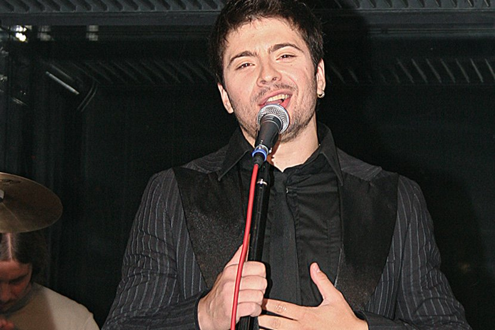

,,Музиком се бавим из чисте љубави, певам од кад знам за себе. Мислим да би без музике мој живот био потпуно празан и бесмислен!"
,,Баладе су мој заштитни знак јер мислим да помоћу њих могу најлакше да пренесем емоције својој публици. То не значи да не волим и брже ритмове, али лаганице су ми ипак број један!"
,,Моја публика је за мене највећа радост. За њих пјевам и живим и знам зашто ме воли јер се никада не штедим и за цеену, да паднем у несвест послије концерта од умора. Апсолутно се не штедим кад је у питању музика и публика. На моју срећу (или нечију несрећу), ја и моји обожаватељи дишемо као једно."
